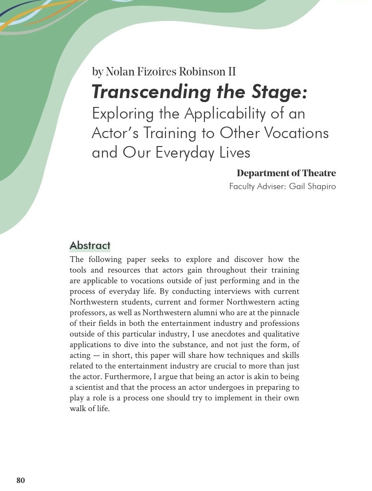
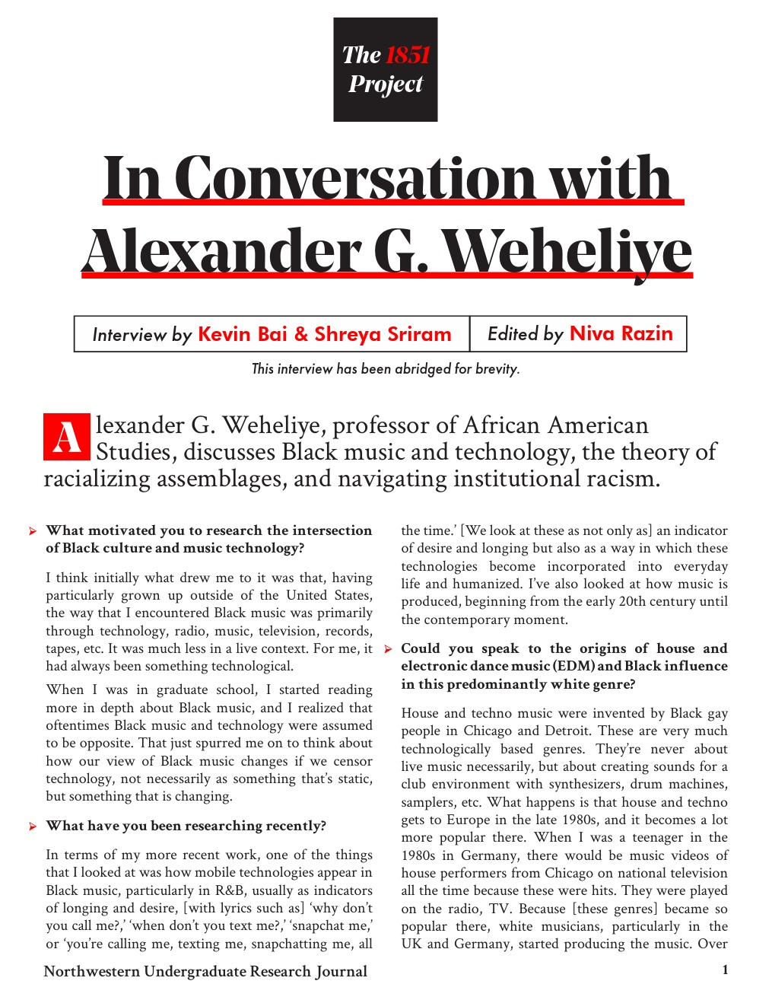
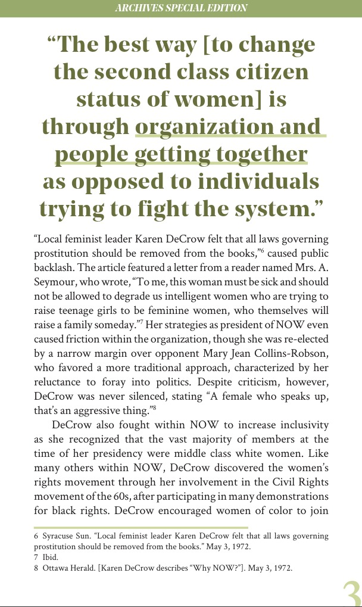
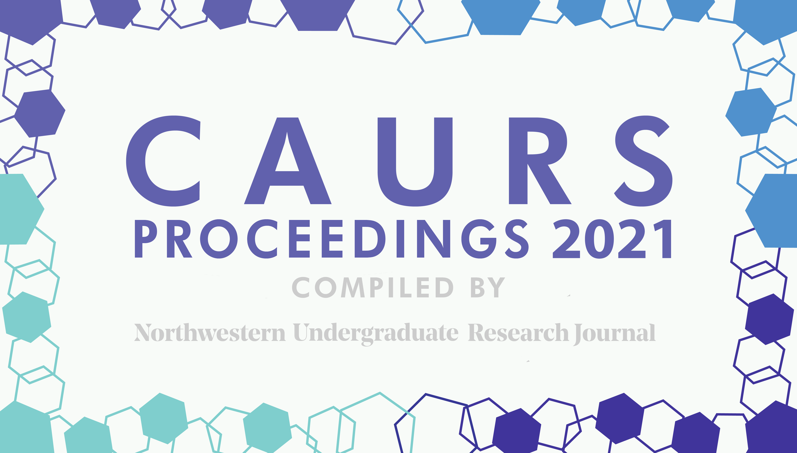
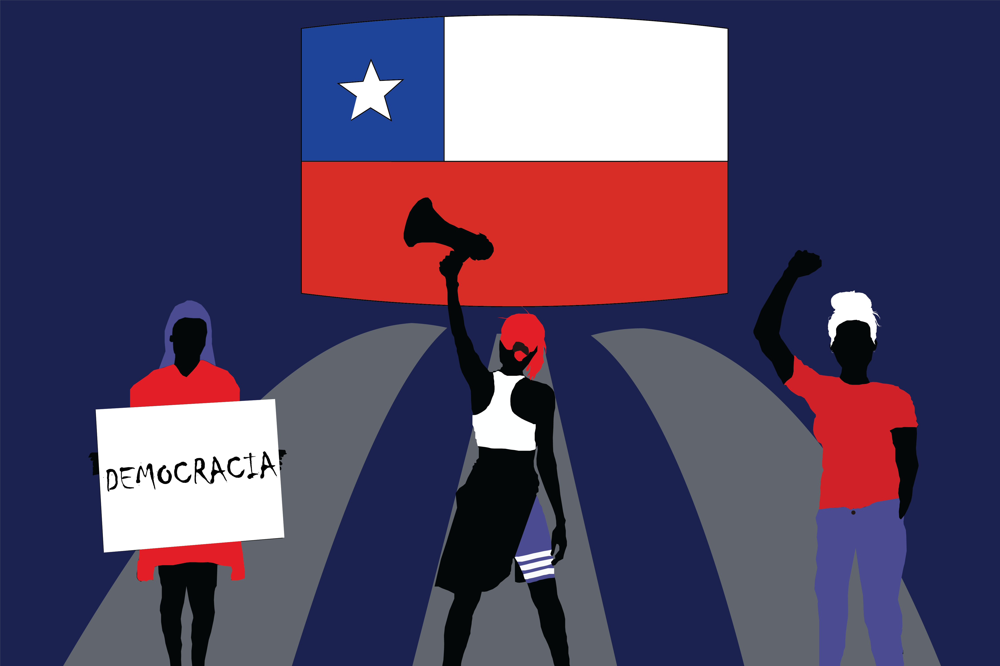
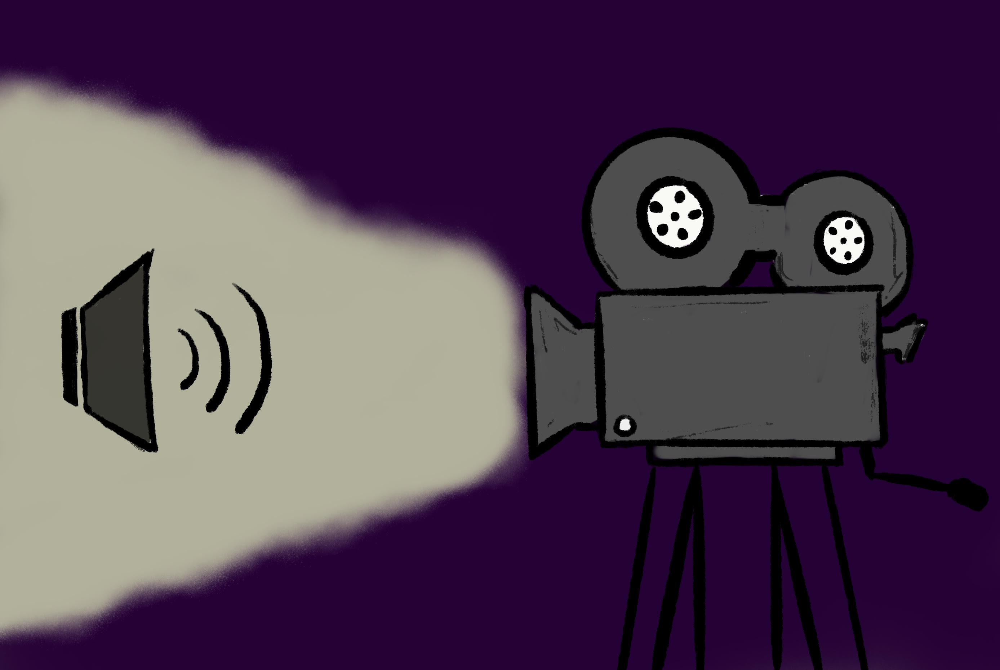
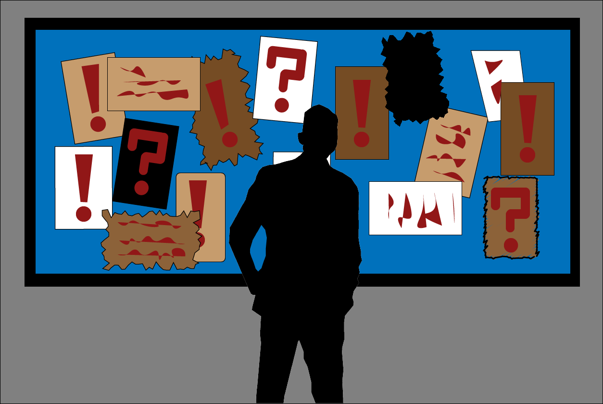
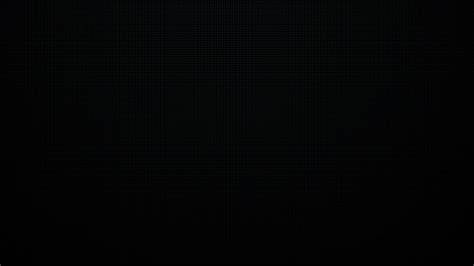

Northwestern Undergraduate Research Journal
Overview
The NURJ is the only undergraduate run research journal at Northwestern University. We focus on publishing undergraduate research both in print and online.
I served as designer for 3 years, and co-led the Online portion of our design work during my last year.
Below you’ll find a collection of all my work, ranging from cover designs, marketing material, online thumbnails, and thesis formatting.







